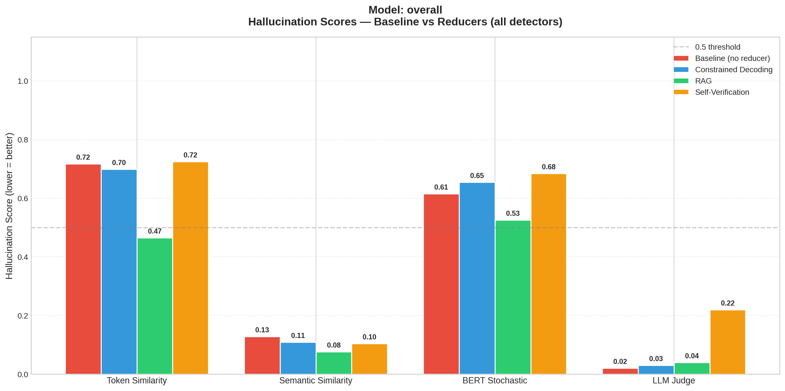
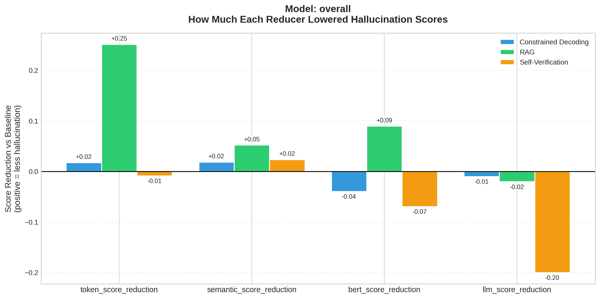
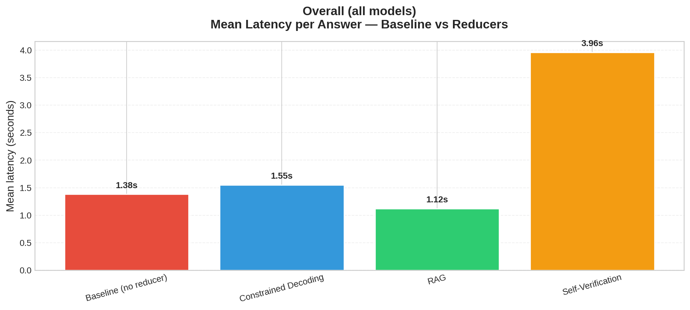
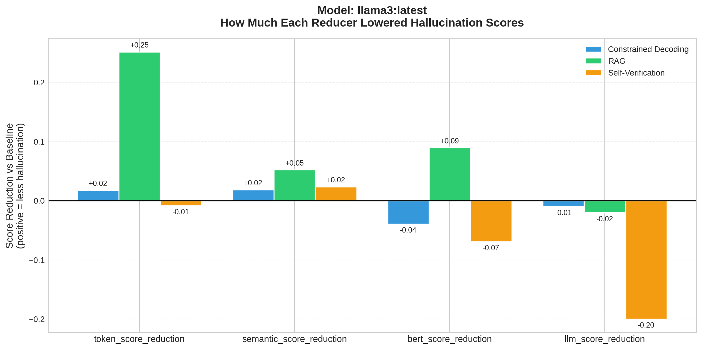
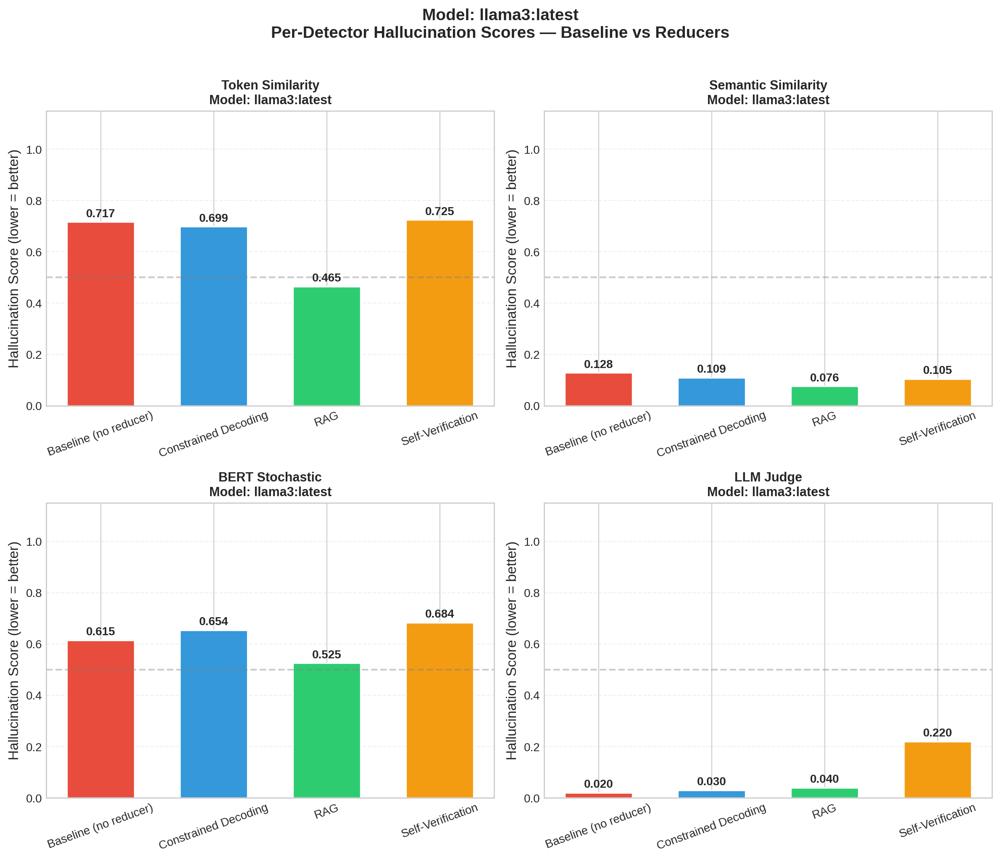

Testing how RAG, Constrained Decoding, and Self-Verification reduce LLM hallucination scores, measured by 4 detectors (Token, Semantic, BERT, LLM Judge).
Averaged across all models/datasets in this run folder.





| reducer | dataset | token_score | semantic_score | bert_score | llm_score | n_samples |
|---|---|---|---|---|---|---|
| baseline | synthetic | 0.717 | 0.128 | 0.615 | 0.020 | 5 |
| constrained_decoding | synthetic | 0.699 | 0.109 | 0.654 | 0.030 | 5 |
| rag | synthetic | 0.465 | 0.076 | 0.525 | 0.040 | 5 |
| self_verification | synthetic | 0.725 | 0.105 | 0.684 | 0.220 | 5 |
Positive = reducer lowered hallucination score. Higher = better.
| model | reducer | token_score_reduction | semantic_score_reduction | bert_score_reduction | llm_score_reduction | token_score_win_rate | semantic_score_win_rate | bert_score_win_rate | llm_score_win_rate |
|---|---|---|---|---|---|---|---|---|---|
| llama3:latest | constrained_decoding | 0.018 | 0.019 | -0.039 | -0.010 | 0.600 | 0.600 | 0.200 | 0.200 |
| llama3:latest | rag | 0.251 | 0.052 | 0.090 | -0.020 | 0.600 | 0.800 | 0.600 | 0.000 |
| llama3:latest | self_verification | -0.008 | 0.023 | -0.069 | -0.200 | 0.400 | 0.600 | 0.400 | 0.000 |